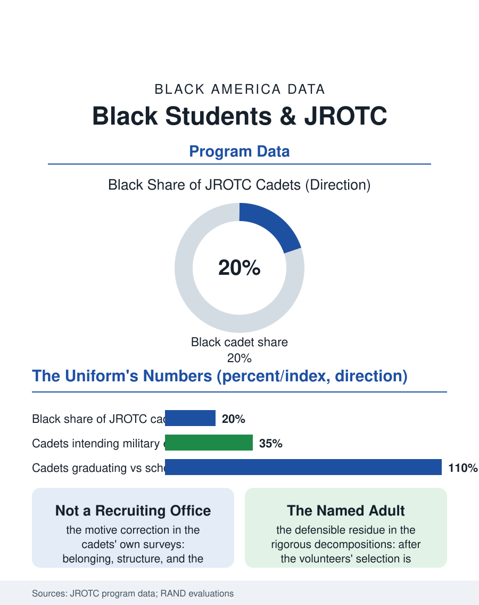

Black Education
Citizenship's Uniform: Black Students and JROTC
Half a million cadets, belonging and a named adult as the real curriculum, in the uniform the debates misread. The JROTC file.

Junior ROTC is the public school's largest uniformed program, enrolling some half million cadets nationally, with Black students participating at rates above their enrollment share, a fact the program's critics and champions read in opposite directions from the same data. This article reads the JROTC file on the evidence's terms.
Who Wears the Uniform
The participation data give the file its base: the cadets are disproportionately Black and Latino and from the working-income districts where the program's units are concentrated, the South's school map carrying the program's density in the pattern of the military files' geography, and the enrollment's motives in the cadets' own surveys being the file's first corrective, the uniform, the belonging, the instructor's mentorship, and the structure named ahead of the military intention, which most cadets do not hold, the program being by its statute a citizenship curriculum whose enlistment outcomes, while above the baseline, involve a minority of its graduates. The instructor file is the program's human core: the retired noncommissioned and commissioned officers who teach it are a substantially Black cadre in the urban units, the veteran file's members in the classroom, their mentorship the mechanism every evaluation of the program eventually names. The uniform's economics belong in the file's honest ledger, because the program supplies the uniform and the structure at no cost to the family, in a building where the pay-to-play file has priced the other belonging, the band's instrument and the team's fee, so that the corps' accessibility is partly a price, zero, in the market for the named adult and the organized afternoon. The marksmanship and the robotics and the cyber teams under the program's umbrella extend its competition file into the STEM files' territory, their trophies complicating the debates' portrait in the pattern of the whole file.
The Outcomes' Honest Ledger
The research file is the contested ground the file treats carefully: the cadets' attendance, grades, and graduation run ahead of their schools' comparisons in the program's data, with the volunteers' self-sorting accounting for much of it, the volunteer cadet being the motivated student, accounting for much of it in the rigorous studies' decomposition, leaving the program's defensible residue in the belonging and the adult-attachment measures, the cadet's named adult being the outcome the dropout file prices highest. The drill and the color guard and the academic teams compose the competition file in the extracurricular pattern, their trophies the units' pride and the recruiters' least relevant datum. The funding file, the services' and the districts' shared cost, is the program's political weather, the school board debates over the program's presence being the culture file's local form, conducted in the language of the curriculum's content.
Citizenship's Uniform
The JROTC file closes on the program's stated purpose against its reputation, because the statute's text is citizenship and leadership in a school uniform, and the data's cadet is most often a student buying, with the uniform's obligations, an adult's attention and a corps' belonging in a building where both are rationed, a transaction whose terms the critics who would remove the program rarely price for the cadets who would lose it. The program's Black history rides inside it, the retired sergeant major in the urban classroom being the military channel's product returned as the school's faculty, in the circuit of the veterans file. The services count the units each year, their map the South's and the cities'. The file's last entry is the morning's colors at the school's pole, raised by the cadets before the first bell in the sight of the arriving buses, a ceremony the building's day begins inside of, whatever the debates make of it, which is the program's whole presence stated at its simplest hour. The inspection's morning, the uniform's crease and the brass's shine judged at the formation, is the program's pedagogy of the standard made visible on the student's own person, a lesson whose transfer the cadets' teachers in the other classrooms report without being asked. The crease holds or it does not, in front of everyone, which is the whole of the lesson and the beginning of the cadet's understanding of the standard's mercy: it is knowable in advance. The standard, known in advance, is kept in the open.
More in Black Education
Black Educational Attainment: High School Parity, the College Gap
About 89 percent of Black adults hold a high school diploma and one in four holds a bachelor's degree or higher — the attainment ladder, the college completion gap, and the generational trend.
Historically Black Colleges and Universities: Enrollment and Degrees
More than 100 HBCUs enroll roughly 290,000 students and award about one in six Black bachelor's degrees — an outsized share from a small sector. The federal education data.
Black College Enrollment: 2.4 Million Students
About 2.4 million Black students are enrolled in American colleges — nearly two-thirds of them women. The NCES enrollment data by sector, level, and trend.
Source: U.S. Army, Navy, Air Force, and Marine Corps JROTC program data; RAND and independent program evaluations.